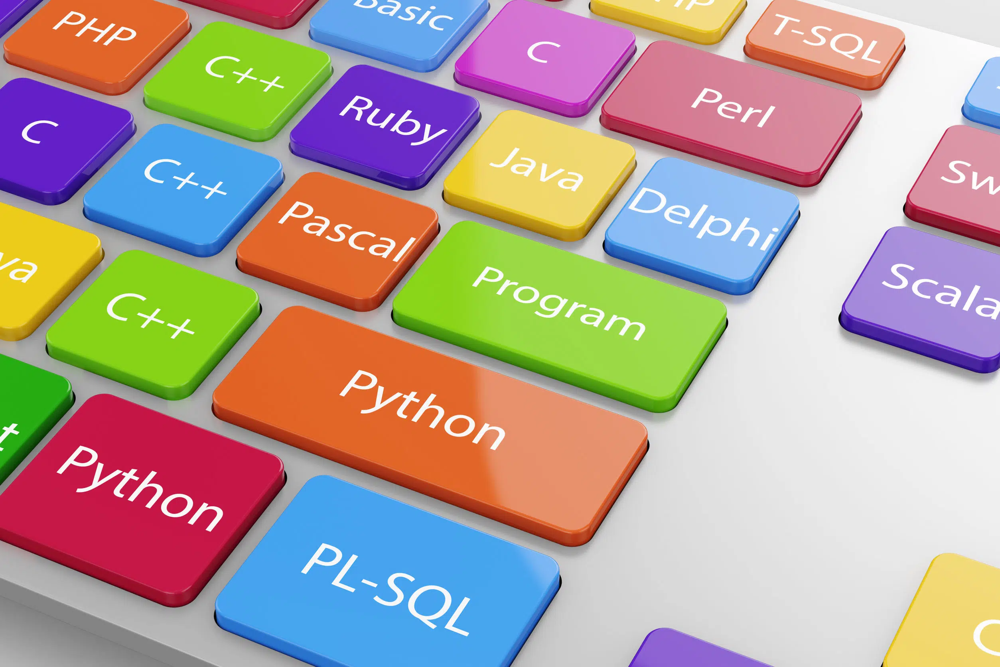

Première question que vous vous posez sûrement, en quoi consiste la spécialité NSI ?

Une partie importante de cette spécialité réside dans l'apprentissage de certains langages de programmation.

La spécialité Numérique et Sciences Informatiques (NSI) est disponible en première et en terminale au lycée Augustin Thierry. Si vous aimez l'informatique et que vous êtes motivés pour apprendre, la spécialité NSI est faite pour vous ! En première, nous abordons plusieurs sujets fondamentaux de l'informatique.